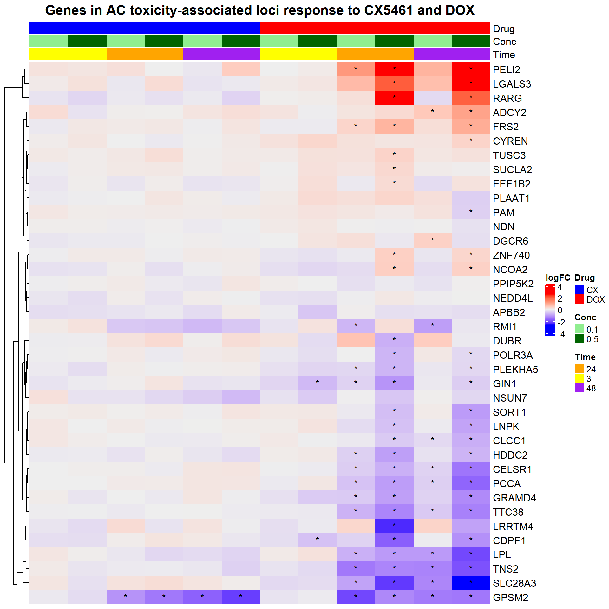

Last updated: 2025-02-28
Checks: 6 1
Knit directory: Paul_CX_2025/
This reproducible R Markdown analysis was created with workflowr (version 1.7.1). The Checks tab describes the reproducibility checks that were applied when the results were created. The Past versions tab lists the development history.
The R Markdown file has unstaged changes. To know which version of
the R Markdown file created these results, you’ll want to first commit
it to the Git repo. If you’re still working on the analysis, you can
ignore this warning. When you’re finished, you can run
wflow_publish to commit the R Markdown file and build the
HTML.
Great job! The global environment was empty. Objects defined in the global environment can affect the analysis in your R Markdown file in unknown ways. For reproduciblity it’s best to always run the code in an empty environment.
The command set.seed(20250129) was run prior to running
the code in the R Markdown file. Setting a seed ensures that any results
that rely on randomness, e.g. subsampling or permutations, are
reproducible.
Great job! Recording the operating system, R version, and package versions is critical for reproducibility.
Nice! There were no cached chunks for this analysis, so you can be confident that you successfully produced the results during this run.
Great job! Using relative paths to the files within your workflowr project makes it easier to run your code on other machines.
Great! You are using Git for version control. Tracking code development and connecting the code version to the results is critical for reproducibility.
The results in this page were generated with repository version 115fedc. See the Past versions tab to see a history of the changes made to the R Markdown and HTML files.
Note that you need to be careful to ensure that all relevant files for
the analysis have been committed to Git prior to generating the results
(you can use wflow_publish or
wflow_git_commit). workflowr only checks the R Markdown
file, but you know if there are other scripts or data files that it
depends on. Below is the status of the Git repository when the results
were generated:
Ignored files:
Ignored: .RData
Ignored: .Rhistory
Ignored: .Rproj.user/
Unstaged changes:
Modified: analysis/Actox.Rmd
Note that any generated files, e.g. HTML, png, CSS, etc., are not included in this status report because it is ok for generated content to have uncommitted changes.
These are the previous versions of the repository in which changes were
made to the R Markdown (analysis/Actox.Rmd) and HTML
(docs/Actox.html) files. If you’ve configured a remote Git
repository (see ?wflow_git_remote), click on the hyperlinks
in the table below to view the files as they were in that past version.
| File | Version | Author | Date | Message |
|---|---|---|---|---|
| Rmd | a73142a | sayanpaul01 | 2025-02-28 | Commit |
| html | a73142a | sayanpaul01 | 2025-02-28 | Commit |
# Load required libraries
library(tidyverse)Warning: package 'tidyverse' was built under R version 4.3.2Warning: package 'ggplot2' was built under R version 4.3.3Warning: package 'tidyr' was built under R version 4.3.3Warning: package 'readr' was built under R version 4.3.3Warning: package 'purrr' was built under R version 4.3.1Warning: package 'dplyr' was built under R version 4.3.2Warning: package 'stringr' was built under R version 4.3.2Warning: package 'lubridate' was built under R version 4.3.1library(gridtext)Warning: package 'gridtext' was built under R version 4.3.3library(scales)Warning: package 'scales' was built under R version 4.3.2library(kableExtra)Warning: package 'kableExtra' was built under R version 4.3.3library(qvalue)Warning: package 'qvalue' was built under R version 4.3.1library(data.table)Warning: package 'data.table' was built under R version 4.3.2library(ComplexHeatmap)Warning: package 'ComplexHeatmap' was built under R version 4.3.1library(readr)
library(limma)Warning: package 'limma' was built under R version 4.3.1library(edgeR)Warning: package 'edgeR' was built under R version 4.3.1library(ComplexHeatmap)
library(circlize)Warning: package 'circlize' was built under R version 4.3.3library(grid)
library(tidyr)
library(reshape2)
library(dplyr)
library(org.Hs.eg.db)Warning: package 'AnnotationDbi' was built under R version 4.3.2Warning: package 'BiocGenerics' was built under R version 4.3.1Warning: package 'Biobase' was built under R version 4.3.1Warning: package 'IRanges' was built under R version 4.3.1Warning: package 'S4Vectors' was built under R version 4.3.1# Load DEGs Data
CX_0.1_3 <- read.csv("data/DEGs/Toptable_CX_0.1_3.csv")
CX_0.1_24 <- read.csv("data/DEGs/Toptable_CX_0.1_24.csv")
CX_0.1_48 <- read.csv("data/DEGs/Toptable_CX_0.1_48.csv")
CX_0.5_3 <- read.csv("data/DEGs/Toptable_CX_0.5_3.csv")
CX_0.5_24 <- read.csv("data/DEGs/Toptable_CX_0.5_24.csv")
CX_0.5_48 <- read.csv("data/DEGs/Toptable_CX_0.5_48.csv")
DOX_0.1_3 <- read.csv("data/DEGs/Toptable_DOX_0.1_3.csv")
DOX_0.1_24 <- read.csv("data/DEGs/Toptable_DOX_0.1_24.csv")
DOX_0.1_48 <- read.csv("data/DEGs/Toptable_DOX_0.1_48.csv")
DOX_0.5_3 <- read.csv("data/DEGs/Toptable_DOX_0.5_3.csv")
DOX_0.5_24 <- read.csv("data/DEGs/Toptable_DOX_0.5_24.csv")
DOX_0.5_48 <- read.csv("data/DEGs/Toptable_DOX_0.5_48.csv")
Entrez_IDs <- c(57161,3958,80059,5095,10499,4692,108,7991,57110,6272,29899,23155,8803,80856,23327,54477,23151,55020,150383,9620,78996,11128,4023,8214,79730,323,344595,5066,23262,54826,5916,23371,283337,64078,80010,1933,10818,51020)
# Subset the toptable based on the entrez IDs and select specific columns
subset_toptable1 <- CX_0.1_3[CX_0.1_3$Entrez_ID %in% Entrez_IDs, c("Entrez_ID", "logFC", "adj.P.Val")]
subset_toptable2 <- CX_0.1_24[CX_0.1_24$Entrez_ID %in% Entrez_IDs, c("Entrez_ID", "logFC", "adj.P.Val")]
subset_toptable3 <- CX_0.1_48[CX_0.1_48$Entrez_ID %in% Entrez_IDs, c("Entrez_ID", "logFC", "adj.P.Val")]
subset_toptable3 <- CX_0.1_48[CX_0.1_48$Entrez_ID %in% Entrez_IDs, c("Entrez_ID", "logFC", "adj.P.Val")]
subset_toptable4 <- CX_0.5_3[CX_0.5_3$Entrez_ID %in% Entrez_IDs, c("Entrez_ID", "logFC", "adj.P.Val")]
subset_toptable5 <- CX_0.5_24[CX_0.5_24$Entrez_ID %in% Entrez_IDs, c("Entrez_ID", "logFC", "adj.P.Val")]
subset_toptable6 <- CX_0.5_48[CX_0.5_48$Entrez_ID %in% Entrez_IDs, c("Entrez_ID", "logFC", "adj.P.Val")]
subset_toptable7 <- DOX_0.1_3[DOX_0.1_3$Entrez_ID %in% Entrez_IDs, c("Entrez_ID", "logFC", "adj.P.Val")]
subset_toptable8 <- DOX_0.1_24[DOX_0.1_24$Entrez_ID %in% Entrez_IDs, c("Entrez_ID", "logFC", "adj.P.Val")]
subset_toptable9 <- DOX_0.1_48[DOX_0.1_48$Entrez_ID %in% Entrez_IDs, c("Entrez_ID", "logFC", "adj.P.Val")]
subset_toptable10 <- DOX_0.5_3[DOX_0.5_3$Entrez_ID %in% Entrez_IDs, c("Entrez_ID", "logFC", "adj.P.Val")]
subset_toptable11 <- DOX_0.5_24[DOX_0.5_24$Entrez_ID %in% Entrez_IDs, c("Entrez_ID", "logFC", "adj.P.Val")]
subset_toptable12 <- DOX_0.5_48[DOX_0.5_48$Entrez_ID %in% Entrez_IDs, c("Entrez_ID", "logFC", "adj.P.Val")]# Assuming your dataframe is named data
# Add a column for significance stars
final_data <- final_data %>%
mutate(Significance = ifelse(adj.P.Val < 0.05, "*", ""))
# Create a matrix for the heatmap (logFC values)
logFC_matrix <- acast(final_data, Gene ~ paste(Drug, Conc, Time, sep = "_"), value.var = "logFC")
# Create a matrix for the significance annotations
signif_matrix <- acast(final_data, Gene ~ paste(Drug, Conc, Time, sep = "_"), value.var = "Significance")
# Split column names into Drug, Conc, and Time
colnames_split <- strsplit(colnames(logFC_matrix), "_")
drug <- sapply(colnames_split, function(x) x[1])
conc <- sapply(colnames_split, function(x) x[2])
time <- sapply(colnames_split, function(x) x[3])
# Create the desired column order: CX 0.1 3hr, CX 0.5 3hr, CX 0.1 24hr, CX 0.5 24hr, CX 0.1 48h, CX 0.5 48h,
# DOX 0.1 3hr, DOX 0.5 3hr, DOX 0.1 24hr, DOX 0.5 24hr, DOX 0.1 48h, DOX 0.5 48h
desired_order <- c("CX_0.1_3", "CX_0.5_3", "CX_0.1_24", "CX_0.5_24", "CX_0.1_48", "CX_0.5_48",
"DOX_0.1_3", "DOX_0.5_3", "DOX_0.1_24", "DOX_0.5_24", "DOX_0.1_48", "DOX_0.5_48")
# Reorder columns in the matrix based on the desired order
column_names <- paste(drug, conc, time, sep = "_")
column_order <- match(desired_order, column_names)
logFC_matrix <- logFC_matrix[, column_order]
signif_matrix <- signif_matrix[, column_order]
drug <- drug[column_order]
conc <- conc[column_order]
time <- time[column_order]
# Prepare annotations matching the column structure
ha_top <- HeatmapAnnotation(
Drug = drug,
Conc = conc,
Time = time,
col = list(Drug = c("CX" = "blue", "DOX" = "red"),
Conc = c("0.1" = "lightgreen", "0.5" = "darkgreen"),
Time = c("3" = "yellow", "24" = "orange", "48" = "purple")),
annotation_height = unit(c(2, 2, 2), "cm")
)
# Create the heatmap
heatmap <- Heatmap(logFC_matrix, name = "logFC", top_annotation = ha_top,
cell_fun = function(j, i, x, y, width, height, fill) {
grid.text(signif_matrix[i, j], x, y, gp = gpar(fontsize = 10))
},
show_row_names = TRUE, show_column_names = FALSE,
column_title = "Genes in AC toxicity-associated loci response to CX5461 and DOX",
column_title_gp = gpar(fontsize = 16, fontface = "bold"),
cluster_columns = FALSE) # Disable column clustering
# Draw the heatmap
draw(heatmap, heatmap_legend_side = "right", annotation_legend_side = "right")
| Version | Author | Date |
|---|---|---|
| a73142a | sayanpaul01 | 2025-02-28 |
sessionInfo()R version 4.3.0 (2023-04-21 ucrt)
Platform: x86_64-w64-mingw32/x64 (64-bit)
Running under: Windows 11 x64 (build 22631)
Matrix products: default
locale:
[1] LC_COLLATE=English_United States.utf8
[2] LC_CTYPE=English_United States.utf8
[3] LC_MONETARY=English_United States.utf8
[4] LC_NUMERIC=C
[5] LC_TIME=English_United States.utf8
time zone: America/Chicago
tzcode source: internal
attached base packages:
[1] stats4 grid stats graphics grDevices utils datasets
[8] methods base
other attached packages:
[1] org.Hs.eg.db_3.18.0 AnnotationDbi_1.64.1 IRanges_2.36.0
[4] S4Vectors_0.40.1 Biobase_2.62.0 BiocGenerics_0.48.1
[7] reshape2_1.4.4 circlize_0.4.16 edgeR_4.0.1
[10] limma_3.58.1 ComplexHeatmap_2.18.0 data.table_1.14.10
[13] qvalue_2.34.0 kableExtra_1.4.0 scales_1.3.0
[16] gridtext_0.1.5 lubridate_1.9.3 forcats_1.0.0
[19] stringr_1.5.1 dplyr_1.1.4 purrr_1.0.2
[22] readr_2.1.5 tidyr_1.3.1 tibble_3.2.1
[25] ggplot2_3.5.1 tidyverse_2.0.0
loaded via a namespace (and not attached):
[1] bitops_1.0-7 DBI_1.2.3 rlang_1.1.3
[4] magrittr_2.0.3 clue_0.3-66 GetoptLong_1.0.5
[7] git2r_0.35.0 matrixStats_1.4.1 compiler_4.3.0
[10] RSQLite_2.3.3 png_0.1-8 systemfonts_1.1.0
[13] vctrs_0.6.5 pkgconfig_2.0.3 shape_1.4.6.1
[16] crayon_1.5.3 fastmap_1.1.1 magick_2.8.5
[19] XVector_0.42.0 promises_1.3.0 rmarkdown_2.29
[22] tzdb_0.4.0 bit_4.0.5 xfun_0.50
[25] zlibbioc_1.48.0 cachem_1.0.8 GenomeInfoDb_1.38.8
[28] jsonlite_1.8.9 blob_1.2.4 later_1.3.2
[31] parallel_4.3.0 cluster_2.1.6 R6_2.5.1
[34] bslib_0.8.0 stringi_1.8.3 RColorBrewer_1.1-3
[37] jquerylib_0.1.4 Rcpp_1.0.12 iterators_1.0.14
[40] knitr_1.49 httpuv_1.6.15 splines_4.3.0
[43] timechange_0.3.0 tidyselect_1.2.1 rstudioapi_0.17.1
[46] yaml_2.3.10 doParallel_1.0.17 codetools_0.2-20
[49] lattice_0.22-5 plyr_1.8.9 withr_3.0.2
[52] KEGGREST_1.42.0 evaluate_1.0.3 xml2_1.3.6
[55] Biostrings_2.70.1 pillar_1.10.1 whisker_0.4.1
[58] foreach_1.5.2 generics_0.1.3 RCurl_1.98-1.13
[61] rprojroot_2.0.4 hms_1.1.3 munsell_0.5.1
[64] glue_1.7.0 tools_4.3.0 locfit_1.5-9.8
[67] fs_1.6.3 Cairo_1.6-2 colorspace_2.1-0
[70] GenomeInfoDbData_1.2.11 cli_3.6.1 workflowr_1.7.1
[73] viridisLite_0.4.2 svglite_2.1.3 gtable_0.3.6
[76] sass_0.4.9 digest_0.6.34 rjson_0.2.23
[79] memoise_2.0.1 htmltools_0.5.8.1 lifecycle_1.0.4
[82] httr_1.4.7 GlobalOptions_0.1.2 statmod_1.5.0
[85] bit64_4.0.5